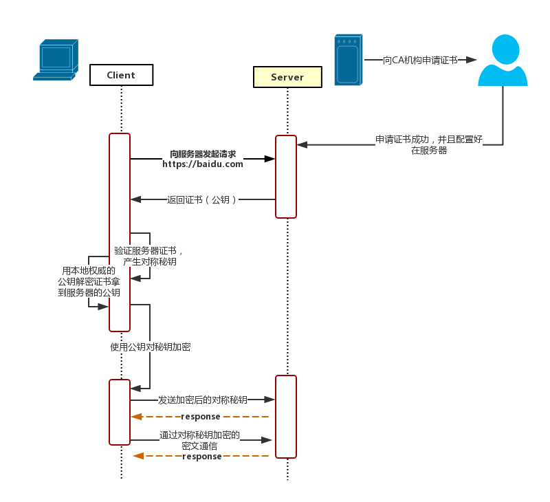

HTTPS
HTTP 有哪些安全性问题？
- 使用明文进行通信，内容可能被窃听
- 不验证通信方身份，通信方的身份有可能遭遇伪装
- 无法证明报文的完整性，报文有可能遭篡改
什么是 HTTPS 协议？
HTTPS = HTTP + SSL，HTTPS 是在 HTTP 的基础上加上了 SSL 保护壳，信息的加密过程就是在 SSL 中完成的。

HTTPS 采用混合的加密机制：
- 使用非对称密钥加密用于传输对称密钥来保证传输过程的安全性（服务器返回证书，证书里包含 Public Key）
- 之后使用对称密钥加密进行通信来保证通信过程的效率（下图中的 Session Key 就是对称密钥）


HTTPS 有哪些特点？
- 内容加密：采用混合加密技术，中间者无法直接查看明文内容
- 验证身份：通过证书认证客户端访问的是自己的服务器
- 保护数据完整性：防止传输的内容被中间人冒充或者篡改
HTTPS 的缺点
- 因为需要进行加密解密等过程，因此速度会更慢
- 需要支付证书授权的高额费用